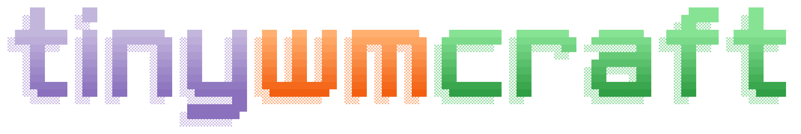
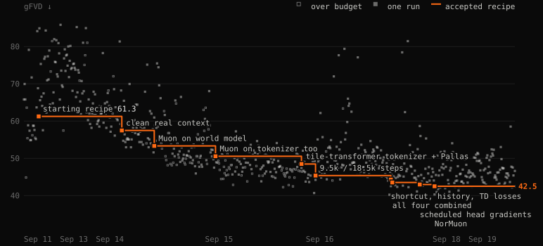
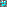
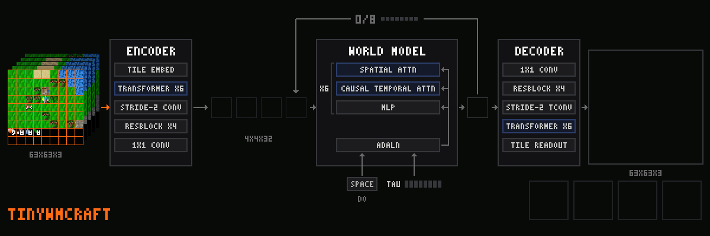

Train a world model in under 10 minutes for $0.1 of compute, and play it!
Every frame below is generated by a 14M-parameter world model on your GPU, one action at a time. Train your own, autoresearch style, and beat ours.
now playing: iteration 3 by Maharishiva
autoresearch you can play
Point your coding agent at tinywmcraft: it trains a world model in 10 minutes, scores it, and tries again. Push the score up, then play the model you made: walk around inside it, craft, fight, and see what it gets wrong.
Beat 0.562 and yours is iteration 4: the crown goes next to your GitHub login, and the player on this page switches to your model. Paste this into your coding agent:
The best so far, by the score: how close imagined play comes to the real game in looks, game logic and memory, and how well the model predicts rewards and deaths, from 0 for a trivial model to 1 for the real game.
- 1Maharishiva0.562 ± 0.017iteration 3 · train.py: clean/masked/noised tokenizer, flow matching + shortcut loss, Muon, two fused kernels, 1/8 game-start windows
- 2Maharishiva0.463 ± 0.023iteration 2 · tile transformer tokenizer, fused Pallas kernels, hard-window mining, symlog reward head
- 3Maharishiva0.287 ± 0.019iteration 1 · train_tiny.py: the whole model in 178 lines, no custom kernels

diamond speedrun
Get a diamond

inside the world model. In the player above, not in the real game. No code and no GPU needed. The fastest run posted before 24 December 2026 (PST) wins a paper copy of Sutton & Barto's Reinforcement Learning.What counts: a diamond in the inventory that iteration 3 draws on this site, the model this page plays; that link keeps playing it when a newer model takes over the page. The player reads the inventory itself: when a diamond shows there on two frames in a row, it says DIAMOND! and marks the clip with the step it came on. The fewest steps win. The score does not count: the model hands out +1s that can be farmed.
How to submit: press save clip, then post the clip in the Diamond Speedrun discussion on GitHub, and on X with the clip as a video, a link to the repo and a tag for @rldoeswork (share writes the caption and hands you the clip). A run needs both posts. The clip shows the seed and the action under every frame, so the maintainer can watch it and replay the run. Edited videos, other model files and the real game do not count. The full rules: diamond_speedrun.md.
Or find the best glitch. The model hallucinates in funny ways: post your weirdest clip in the glitch discussion. No prize, just kudos for breaking the world. Every diamond clip and the best glitches go up on this site with your handle.
the road to a diamond
Arrows are hard requirements in the game. Iron tools also need coal, a furnace and a table nearby. In the real game, the first unlock of each of the 22 achievements is worth +1.
how it works
tinywmcraft is a world model of Craftax-Classic, a 2D Minecraft, learned from scratch from pixels and actions alone. Given a history of frames and an action, it generates the next frame, the reward and whether the episode ends; feed its own frames back in and you can play inside it. Every world in the player starts from a first frame the model imagines from noise: nothing is replayed. 13.9M parameters (5.2M tokenizer, 8.6M world model), trained cold in under 10 minutes on one A100, about $0.1 of compute.
Colab Pro: $9.99 for 100 compute units, and a 40 GB A100 uses about 5.4 an hour (~$0.55/h). A full submission, three seeds with their evals, is under $0.5.
